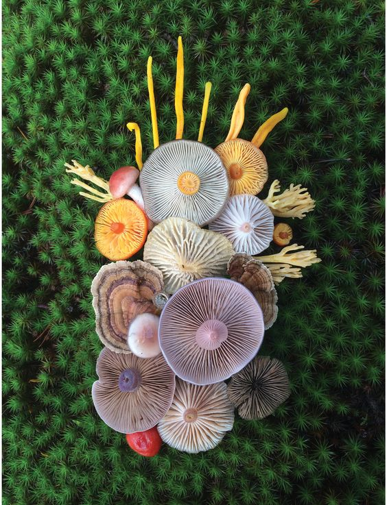

Cada vez más, los seres humanos estamos expuestos a un sinnúmero de enfermedades producto de bacterias. Estas, en algunos casos, pueden provocar infecciones graves y expandirse por todo el cuerpo y derivar en la muerte. Por eso existe la necesidad de seguir estudiando e investigando para encontrar en la naturaleza, y en especial en el mundo de los hongos, especies que aporten con cepas para producir nuevos antibióticos, como el caso de la Penicilina que comenzó a producirse en 1943.
En la actualidad se han descubierto más de 100 mil especies de hongos en el planeta, lo que representaría una mínima parte de las especies existentes. Según Andrea Jaramillo, docente del Departamento de Ciencias de la Salud, apenas se ha descrito el 1% de los hongos que habitarían Ecuador, donde investigadores de la UTPL, en colaboración con investigadores de la Universidad Católica de Lovaina y de la Universidad de Lieja (ULiege) en Bélgica, ejecutaron un proyecto internacional que dio como resultado el hallazgo del hongo de la especie resupinado y corticioide de la selva tropical montañosa del sur de Ecuador llamado “Gloeocystidiellum lojanense”, el cual tiene potencial bioactivo y exhibió actividad antibacteriana.
La confirmación de la nueva especie fue validada por expertos locales y extranjeros y plasmada en un artículo científico publicado en la revista “Journal of Fungi”. Este descubrimiento representa un aporte valioso para la ciencia y, específicamente, para los estudios relacionados con el reino fungi. Además, gracias a este estudio, se puede determinar que en el territorio ecuatoriano existen más especies de hongos con posibles componentes bioactivos.
Hay un camino por recorrer entre tanta diversidad y evaluar, sobre todo, el potencial bioactivo que las especies de hongos pueden contener: estos pueden ser antibacterianos, antifúngico, antiparasitario o anticancerígeno. Un verdadero laboratorio natural.